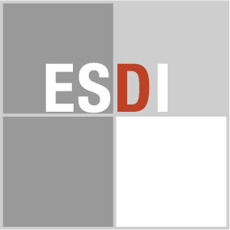

一文字だけ、色が違う。
四文字のうちDだけを赤くすることで、目の止まる場所が生まれます。区画を分ける白い線と、文字の位置も比べましょう。
作品・制作の例3件を紹介しています。実作品画像0点、参照・関連画像1点。画像の収集は継続中です。
デザインの高等教育機関
ESDI Rio de Janeiro
道具や製品を、どうすれば暮らしや産業に役立てられるでしょう。ESDIは、ブラジルのリオデジャネイロに設立されたデザインの学校です。1962年に設立され、1963年に授業が始まりました。学校の名前であり、決まった模様や色の名前ではありません。
参照・関連資料を見る

画像を表示できませんでした。下の出典ページで確認できます。
ESDI（使用主体）／デザイン担当は未確認 / 原制作年未確認／画像採録2014年
学校の識別マークを示す参考図です。学生の制作例ではありません。
四文字のうちDだけを赤くすることで、目の止まる場所が生まれます。区画を分ける白い線と、文字の位置も比べましょう。
ESDI logo, source: Escola Superior de Desenho Industrial website, via Wikimedia Commons / Azemulo. Public domain / PD-textlogo. 学校との提携・推薦を示すものではありません。
出典で作品・資料を見る ↗Public domain / PD-textlogo
Commons個別ページは単純な図形・文字からなるためPD-textlogoと明示。
学校サイト由来のロゴ画像。個別PD-textlogo表示。
原画像を切り取らずに掲載しています。
著作物性の基準には地域差がある。商標権は別に存続しうる。
学校の識別マークの参考図。授業や学生作品を代表する画像ではない。
画像の利用条件 ↗実作品の画像は、まだ掲載していません。下の出典リンクから作品を確かめられます。参照図や説明図は、実作品の画像とは別に数えます。
卒業研究・記録
1963年から1966年初めまでの学校の仕事を記録した卒業研究です。教育の中身を、当時の学生の記録から知る入口になります。
作品・資料の出典を見る ↗作品名（出典表記）：ESDI：ブラジルの工業デザイン学校（ESDI: uma escola de desenho industrial no Brasil）
オクタヴィアノ・ペレイラ・デ・メロ・フィリョ / 1967年 / 卒業研究・記録
この作品一つで、すべての活動を代表するわけではありません。
学校の記念ポスター
学校の記念行事を伝えるポスターです。教育の成果を外へ見せる役割に注目します。
作品・資料の出典を見る ↗作品名（出典表記）：ESDI25周年記念展ポスター（ESDI 25 anos）
ESDI（催し・所蔵）／デザイン担当は未確認 / 1987年 / 学校の記念ポスター
作者の個人名が未確認のため、学校をデザイナーと断定しません。
学生・教員による共同デザイン
博士課程と学部の学生が協力し、診療所のロゴや情報の見せ方を考えた仕事です。健康、大学、社会という三つの役割を、三つの図形へまとめています。
作品・資料の出典を見る ↗作品名（出典表記）：ピケ・カルネイロ総合診療所の視覚的な識別システム
レナタ・ペリン、フェルナンダ・クアドロス、ルイザ・ルッソ／指導：マウロ・ピニェイロ / 2016年9月開始／2017年12月発表 / 学生・教員による共同デザイン
2017年発表時点では、案内表示などへの展開は今後の課題とされています。すべて完成済みとはしません。
初期の教育には、ドイツのウルム造形大学で学んだカール・ハインツ・ベルクミラーやアレシャンドレ・ヴォルネルらが関わりました。
ただ形をまねるのではなく、製品や情報を設計する仕事をブラジルで育てようとした取り組みです。
学校の記念年と授業開始年は、同じ数え方とは限りません。
課題や制作年代によって色は異なります。学校共通の色合いを作品に当てはめません。
学校の案内や記念ポスターでは、名称、年、催しをどんな順番で伝えるかを読みます。
初期の学生の研究記録には、製品づくりの課題が残ります。完成した形だけでなく、材料や使い方の説明を確かめます。
資料を年代順に並べると、学校が何を教え、後に何を振り返ったかを比べられます。
ESDIとウルムは、教員の経歴や教育内容で関係があります。しかし、どの作品も「ウルム風」として片づけず、ブラジルの産業や社会との関係も見ます。
学校の歴史は、先生だけがつくるのでしょうか。学生の卒業制作や、後に資料を残した人の仕事にも目を向けてみましょう。
学校史の研究、記念ポスター、学生と教員の社会向け共同制作を紹介します。掲載画像は学校のロゴの資料で、学生作品そのものの画像ではありません。
作品・制作の例3件を紹介しています。実作品画像0点、参照・関連画像1点。画像の収集は継続中です。